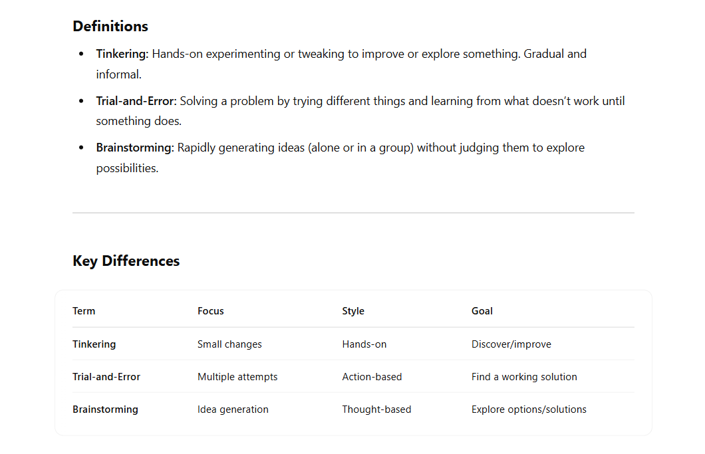

In here, I will put the reflective questions (and my answers).
Tinkering is widely associated with trial-and-error and brainstorming. Find dictionary definitions of the three techniques, and compare them. Does the definition of tinkering match the definition we have in the course? Also, ask a generative AI tool for the definitions and differences. Which aspects does the answer provided miss?
Looking up "Tinkering" in the Cambridge Dictionary, it gave me the definition "to make small changes to something, especially in an attempt to repair or improve it". I have to say that this was both not quite what I had in mind for its definition, as well as match the definition that we learned during the course. I found that the Urban Dictionary, while less formal, provided a more accurate definition: “To mess around with something and you don't really have a clue what you’re doing.". I found this to be more in line with the definition set by both the course as my own interpretation behind the word, since it matched the creative and chaotic nature of tinkering more.
The Cambridge Dictionary defines “trial-and-error” as “a way of achieving an aim or solving a problem by trying a number of different methods and learning from the mistakes that you make”, and “brainstorming” as “an activity or business method in which a group of people meet to suggest a lot of new ideas for possible development”.
While all three techniques do not mean the same thing, they are connected with each other since they focus on the process of trying different things and creating something. However, brainstorming and trial-and-error are more focused on solving a problem while tinkering is more open-ended and more intended to explore what is possible.
When I asked ChatGPT the question “Can you give me the definitions and differences between the terms "tinkering", "trial-and-error" and "brainstorming", please?”, it answered the following:

It seemed as while the definitions were quite clear, it seemed to have left out a few aspects for the key differences. I’d say that the aspect of Context (for when to apply what technique) would be important too, as well as how quick one implementing a technique manages to get feedback on whether that idea works. For instance, during tinkering one can quite quickly understand whether their idea works, but this might not be the case for the other two techniques.
Can you take a typical I-Tech related project case, list and explain 5 technical hurdles? To which extent do they allow for a 'playful' approach in tackling them? Please give arguments.
Since I do not follow the Master’s Interaction Technology, I will use someone else’s project as an example that we were introduced to during CreaTe. The project involved a smart hockeystick, which was wired up and supposed to “enhance engagement and fun for para hockey players” as can be read in their thesis.
Five technical hurdles that can arise are:
Where would you go hunting for tinkerspiration? List 5 physical and 5 online resources valuable for an I-Tech specialist. In which did you already find inspiration for a project you did or that got on your bucket list?
My physical tinkerspiration spaces:
My online tinkerspiration spaces:
List 5 domains, challenges or settings in which you would like to apply tinkering, and explain why. Can you identify some sweet spots, (perhaps beyond the well-known such as STEM education) and can you also define some limitations? Are there 'untinkerable' domains?
As was explained, tinkering is done mostly without a clear goal; it is supposed to be for exploring instead of working towards a concrete goal. I would say that it would be nice to apply tinkering to domains in such a way so that it removes some hurdles one would have. For instance:
I think that the domains where tinkering is not that suitable are the domains where it is necessary to have a clear goal to work towards. One example I can think of is for instance pharmaceuticals: it would not make much sense to me to tinker with all sorts of medicine and “see what happens”. I do have to say: this might actually be the case for some drug-addicts, but that does not mean I condone this form of “tinkering”.
Take a look at the LEGO serious play method. The following book forms a good introduction: LEGO Serious play. Take a look at the sections discussing facilitation - Do adults need a different approach or role in facilitation? Which concepts are relevant?
The task of the facilitator is to make sure the meeting and process runs optimally. They have to keep in mind the two important things: the session has to make way for constructive reflection and dialogue, and to fully utilise the LEGOs. I would say that a different facilitation is needed for adults in comparison to children. First of all, when provided with LEGOs, children are generally speaking more likely to take them and start building stuff right away. This is not implying that adults don’t, but a child’s mind is generally more still in the state of play. Adults will most likely have to be motivated more to pick up the LEGOs and start building. However, since LSP focuses on Serious Play, the builds are supposed to be more meaningful. The seriousness might be more challenging to bring forward when facilitating a LSP workshop with children than with adults, due to their overall shorter attention span and disinterest in being serious. Furthermore, children are still learning and used to being taught since they are still in school, meaning they might be more used to being facilitated or “taught” how to behave or what to do during a LSP workshop. While adults are of course also still learning, they might not be used anymore to being facilitated like they were back when they were still kids and in school.
Read Invent to Learn chapter 5. Summarise the key principles mentioned by Papert and also the key principles by Montessori. Where do Papert and Montessori meet up? What is a fundamental difference in their approach? How well do their mantra's and thoughts on teaching translate to tinkering for 'children of different ages'?
The key principles by Montessori are:
The key ideas by Papert are:
Both Montessori and Papert state the importance of giving children the freedom to explore. They both have some hints of constructionism supporting their ideas and principles, and another common principle is the importance of self-learning and the idea of intrinsic motivation to keep learning. However, Montessori has a bigger focus on smaller children and their early years, while Papert is more suiting for a broader age range and has more of a focus on technology.
Both their principles fit the definition of Tinkering quite well; they both praise learning by doing and hands-on activities to explore a domain. However, especially Papert mentions that there should be freedom to make mistakes. This can be seen as a contradiction to tinkering, since there is no real goal in tinkering: it is just freedom to make. Both Montessori’s and Papert’s principles about self-teaching are in line with the idea of Tinkering as well.
Read Invent To Learn chapter 9. What are useful pointers for the space (location) and setting, what is the message? Do you need a designlab/fablab?
A good space for tinkering should, according to the book, be a lot of things. The place should be functional, but also provide flexibility: people can move furniture and have the space they need for their project. The space should facilitate all sorts of creative tinkering; the equipment should first of all be secure and safe to use, while also stimulating creativity. Whiteboards or materials being placed everywhere allows for the possibility to have brainstorm sessions everywhere and let the creativity flow. The DesignLab is a great example of all the principles mentioned. However: do we need a DesignLab/FabLab? For tinkering, I would say no. You don’t necessarily need a place like the DesignLab to have a good tinkering session. Creativity can happen anywhere, and so can good tinkering. However, places like DesignLab can stimulate tinkering well: it’s equipment and space and community and teams are absolutely great facilitations.
Now get back to your own practice as a designer/engineer:
where in a process do you use tinkering?
While most projects I do are for schoolwork, tinkering doesn’t occur that much for those projects since there is a clear goal to be met, which contradicts with the principle of tinkering. So it would be more of the personal projects or hobbies that involve tinkering. For instance playing the guitar: I know some chords, so I can play around and see what sounds nice and that way come up with new things. Or I empty my box with LEGO and go play with it like I did when I was a kid.
How can you translate a design problem or research problem into a tinkering playground?
I would say that this would most of the time involve a physical problem. First I, as the facilitator, would get familiar with the problem and already come up with a few solution ideas. Then, I would think of what materials one could use for those solutions when tinkering, and make sure those are already in the toolkit. Of course, I don’t want to limit the people who are going to tinker to my ideas, so I will add way more materials than that. Eventually I would introduce them to the problem and let them go wild with the materials. Of course I will not showcase my solution, since that will disrupt their own creativity to come up with their own ideas.
what can you use to get unstuck?
When I am stuck with a problem, I try to simplify it for myself. This can be done through making drawings or sketches, or writing things down. Sometimes it can help to explain the thing to someone else, since saying things out loud can sometimes help yourself to understand it better. And of course, simply asking for help when being stuck is a great option. However, this does involve someone else who can explain it to you.
how do you get in the flow?
Flow is hard to come by sometimes. Just saying to yourself that you “have to get in the flow now” won’t do it. I found that one of the most important parts is to eliminate all forms of distractions. Limiting yourself to either doing the thing or doing nothing has helped me greatly. Of course, there are people who have great self-discipline, but that is not me. After getting rid of all distractions, the only way of getting into the flow is to just start doing the thing. Just shut up and get working.
Another method that sometimes is to put on the right music to increase your focus. What helped me focus on writing parts of this portfolio was the 10 hour Coconut Mall song from Mario Kart…
In fact, I am listening to it while writing this very sentence...
I am on the verge of going insane.
And the only way I can reward myself and turn it off is by simply finishing this assignment.
Tinkering is a way to generate knowledge. What kind of knowledge results from a tinkering process in your experience?
There is a lot to learn from tinkering. An example is practical hands-on experience. From all my years of tinkering in my dad’s shed ever since I was a little kid, I have gained all sorts of skills. From working with certain materials to operating all sorts of equipment and machines. And from tinkering with my new 3D printer, I have learned a lot about 3D printing. A while back I had my first introshift for the DesignLab’s TechTeam, and thanks to these skills I could show I knew how to operate all the machines and 3D printers.
Furthermore, while tinkering objects from having a clear goal, it can help build the skill of iterative and problem-solving design. There is an old video of me trying to build a car out of wood when I was seven. And as you can expect from a 7 year old kid, everything went wrong and was constantly falling apart. But it did teach me to have a problem-solving mindset.
Tinkering with classical materials like clay, paper, colour, textiles is more related to craft. How does tinkering work with digital and electronic media?
I would say that tinkering with digital and electronic media would also require quick feedback and needs its “materials” to be simplified. When working with digital and electronic media, you could make sure that the user can very quickly mess around with the components. For instance, making digital music. An example would be how Garageband has the option to mess around with all sorts of instruments and place them on the beat. This way, you can quickly make a song, try out certain instruments and iterate your piece without having to worry much about staying on the right beat.
Concerning electronic media, I quickly have to think about how it is fun when you manage to make some servo’s move, but having to program them takes a while and some trial-and-error. A tinkering playground would entail some simplified servo’s and for instance Arduino, so that you only have to plug some servo’s in and can start tinkering. This is kind of like the BYOR toolkit we experimented with during the second session.
One basic characteristic of science is reproducibility. Is that possible with tinkering? Or do we want that at all?
In science, reproducibility means that the results from a certain research can be shown, done or made again. The idea is that you can carry out a specific research twice under the exact same circumstances, and that it will have the same result. While I don’t think it is impossible with tinkering, I do estimate it to be highly unlikely that two tinkering sessions end up with the exact same results.
To begin with, the tinkering session must be exactly the same: the same facilitation, materials, atmosphere, but with different people. I think this is already very unlikely to happen. But if this were to be the case, I think that the chance that people come up with the exact same end result is very slim.
I think that a great power of tinkering lies within its ability to have people develop all sorts of creative and unique projects. However, I think that this uniqueness is something we would prefer over reproducibility during a tinkering session.
Design practice changed during the past years, from long design phases to short, iterative processes, due to the availability of new prototyping technologies. Is this iterative process of prototyping qualitatively different from the cycles we do in tinkering?
An iterative process of prototyping is different from tinkering in cycles. The main reason for its difference lies in its goal. Or the lack of a goal.
An iterative prototyping process involves making designs, reviewing what you made based on what its purpose is and the goal of the project and changing and developing your prototype. This means that there is a goal that you want to meet, and you iterate the design based on the evaluation of the prototype in context of the goal. However, tinkering is meant to have no goal. It is supposed to be experimental and inviting to work on something. You can refine your work, but not because of the reason that it doesn’t meet its goal.
Can a co-design session be described as a tinkering session as we treat it in our course?
It can be. However, to do so, the co-design session needs to clearly emphasize that it does not have a clear goal, and it is supposed to be promoting play and exploration. A while ago, I had to facilitate a co-design session for another course. This session was done with a teacher, and its goal was only to get familiar with their perspectives on a certain topic. There was no design issue we had to solve, we only talked about what we both thought about the certain topic. In such a session, tinkering can definitely applied. However, I would not say that co-design can therefor be described as a tinkering session. It has the potential to, but it depends on the co-design session.
The choice of materials (seed, tools, scaffolding, facilitation) has an effect on the outcome, the knowledge and products made in a tinkering session. How can we use that in a co-design session? Can we really influence the kind of results here, and do we want that?
I would say that while the results of a co-design session are highly dependent on the materials provided, another thing might be more important: the creativity of the participants. If you were to give one group different materials than another group, the goal might be to see what the difference is between the results if one group is more “limited”. However, truly creative people will probably still be able to come up with great ideas and results. But we can definitely influence the results based on the materials provided. The question of whether we want that depends on the goal of the session.
Creativity in general is more likely to happen when there is some form of improvisation needed, for instance when there is a certain limitation of materials. But providing exactly the materials needed for a co-design session might influence the group to be less creative and come up with what was initially thought out. The question is which of the two is more important in that case.
In “research through design” can tinkering fill in the design part?
Research through design is still focused on researching. Tinkering is more focused on exploring. Is there a difference? I’d say so. Researching always has a goal: a hypothesis is set out, and through a certain method (design in this case), that hypothesis is tested and knowledge is gained (which is always the goal for research). Tinkering is based on exploration and play. Involving a goal with tinkering goes against its principles. This does not mean that knowledge cannot be gained from tinkering – as stated in a previous question – but it is not the most important aspect for tinkering.
Are there design questions where tinkering is not a possible or useful approach?
Yes. Whenever there is a design question where the goal is more important than the process. Or where it is simply unsafe to start tinkering. An example is – as mentioned before – pharmaceutics; it is highly unwise to simply start tinkering with medicines for the sake of exploration.
Read Invent to Learn page 41. How to balance real-world (criticality) with the fruitful mindset of tinkering?
The book presents the issue that the nature of tinkering is contradictory to or seen as unprofessional in comparison to the serious work of engineering and science. The book states that it is important to involve tinkering more in science: this would prevent people losing interest in for example science or engineering, stimulate creativity and people to want to learn more. It is thus not per se a question of how to balance these two “opposites”, but more a question of how to implement the two to go hand-in-hand.
But how do you find a good balance? This can perhaps be done by making clear that a process can be iterative. Great things are made by improving and constant development and refinement. You could say that the playful exploration is great for the phases where new ideas are needed, and the critical and serious work is done to reflect on and choose from those ideas and steer through the development process.
What is the critical impact your tinkering exercise could have? (on you, your design/engineering practice or problem, both positive and negative)
Our group focused on developing a tinkering workshop for robotics with origami. The goal was to introduce people to the possibilities of origami in robotics, and hopefully stimulate and motivate them to implement origami in their own projects. Since origami is a quite overlooked principle, especially in robotics, we hoped to have opened some eyes and sparked a bit of creativity and drive to tinker with it in the future. For myself, it introduced me to origami in the first place and to soft robotics in general.
What is the impact your session have regarding (more) stuff, ecological footprint and impact on our planet (i.e. how can you avoid that STEM workshops with waste material result in more waste material?)
Origami can be done with paper, cardboard or even cereal boxes. Therefor, the material used is quite low-cost and affordable, which is nice for prototyping. However, for this tinkering workshop we did use paper that we threw out again in the end. In the recycling bin but still… We could have made sure to use recycled paper in the first place and put more focus on that. The thing is that tinkerability during the workshop was partly dependent on the amount of paper we had: people made all sorts of folding mistakes or made things that did not work the way they wanted. When paper is folded, it is difficult to unfold it and fold a new shape that is tight and works nicely. So it was important for the tinkerability to have enough paper on hand.